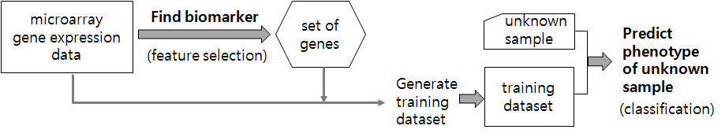
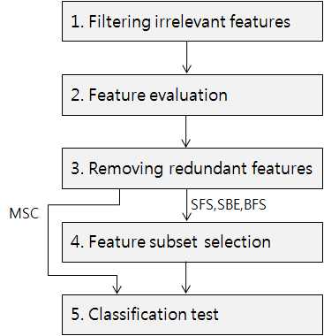
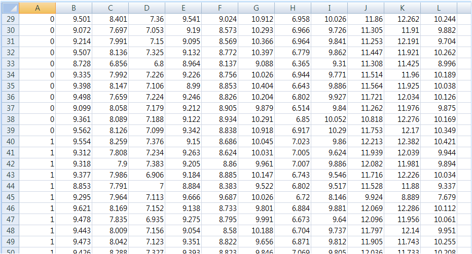
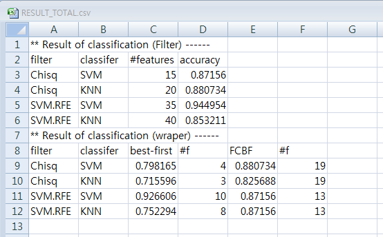

|
1. Introduction
One of important application of gene expression data is to find significant genes related with specific disease such as lung cancer. These significant genes may be used as biomarker to diagnose the disease. Data mining approach is useful to find the biomarker and perform diagnosis. Feature selection and classification schemes are widely used for the purpose. In this study, we suggest data mining approach for finding biomarker genes based on microarray dataset. Proposed approach contains procedural steps to finding and testing biomarker genes. We also implement the proposed method as R library for general usage. We test 12 microarray datasets using implemented library, and suggest best biomarker genes and proper predictor (classifier) for each of them. One of identified biomarker genes is compared with differentially expressed gene list including biological network analysis.
1. Process of disease diagnosis using biomarker

2. Overall steps of procedure to find biomarker

3. Usage
Format of input dataset:
The dataset should be .csv format. Columns are genes and rows are samples in the data table. First column expresses phenotype of samples for target disease. The dataset may contain gene name or gene id in the first row.

Execution
- modify main.R to designate file name of dataset and parameter setting
- User can choose sort of algorithms that he/she wants to test through parameter setting
- Execute main.R
Result
- view RESULT_TOTAL.csv file in 'result' directory

3. Download R source code
Sample Dataset
|